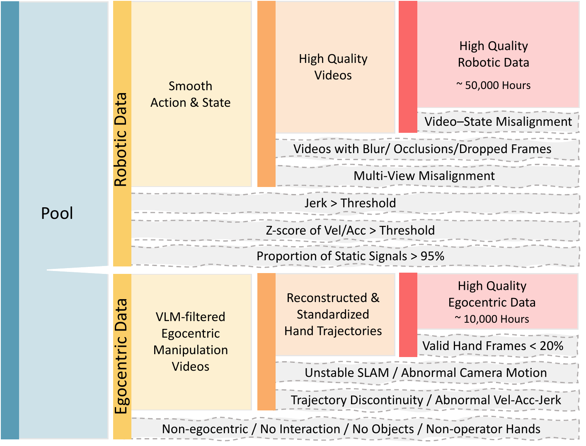
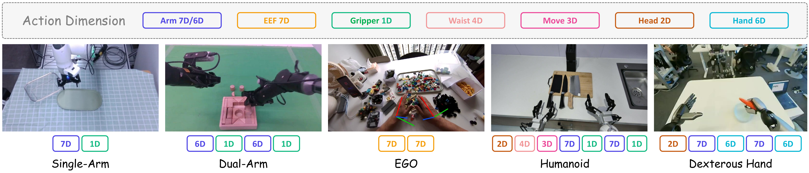
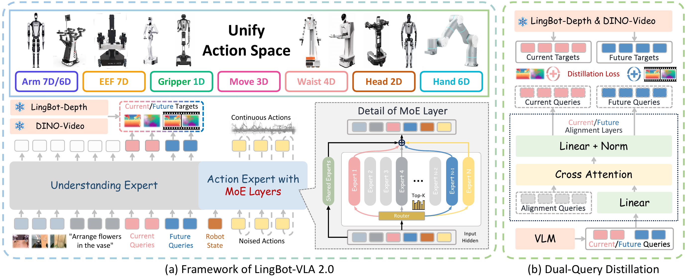
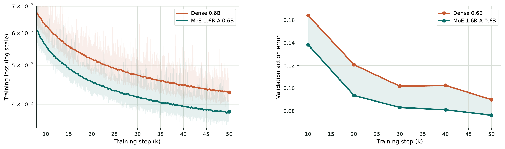
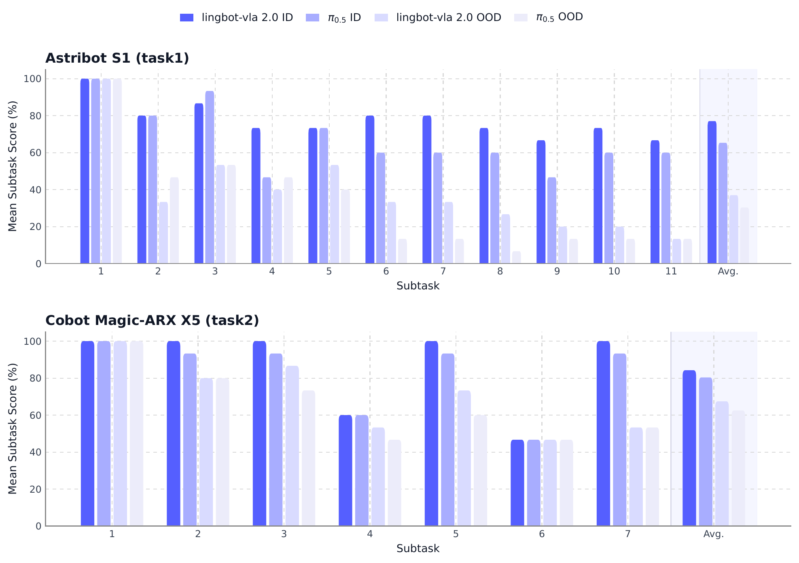
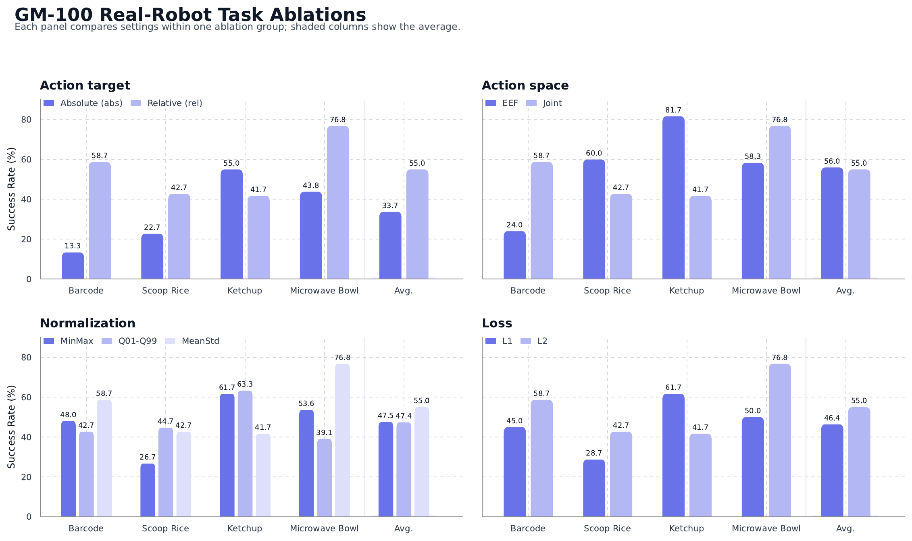

仿真 benchmark · 代码证据
官方 RoboTwin 2.0 后训练配方在 50 任务上报告 Clean 93.52%、Randomized 92.80%；每任务 100 episodes。论文正文没有这组实验。
LingBot‑VLA 2.0 的关键不是单独发明一个更强动作头，而是把数据质量、跨本体动作接口、稀疏容量和“预测未来”辅助监督同时对齐到真实机器人；对参赛者而言，最先复现的应是数据 schema、动作目标与归一化，而不是改 MoE。
先看评测协议，确认“跨本体、OOD、动态预测”分别被什么证据支持；再回到三条设计主线：60k 小时数据、55D 统一动作、MoE + Dual‑Query。最后把论文消融翻译成参赛优先级。
| 背景 | VLA 在实验台上能做多任务，但真实部署要求更多机器人形态、更多自由度、长时程移动操作与未来状态判断。 |
| 直接依赖 | LingBot‑VLA 1.0；Qwen3‑VL 视觉语言骨干；Flow / diffusion action expert；DeepSeek‑V3 式无辅助损失路由；DINOv3、LingBot‑Depth；π₀.₅ 与 GR00T N1.7 基线。 |
| 具体失败场景 | 不同机器人 action schema 不一致；脏轨迹与视频—状态错位污染监督；只对当前帧反应，难以完成未来几步才显现后果的操作；长任务常完成前半段却卡在精确放置或释放。 |
| 核心 insight | 实用 VLA 的瓶颈是“数据 × 本体 × 时序”的联合对齐，而不是只放大 VLM。这是对三组设计的综合解释，属于 inference。 |
| 效果与代价 | 真机平均值优于基线，但绝对成功率有限；需要约 60k 小时预训练数据、外部深度 / 视频教师、6B 级模型、FSDP2 和高显存部署。 |
| 数据谱系 | 90k h 机器人池 → 50k h 过滤后机器人数据；20k h ego 池 → 10k h 过滤 / 重建后手轨迹；另用 5M 视频 clips 训练 DINO‑Video 教师。 |
“predictive dynamics modeling for improved temporal reasoning.”
LingBot‑VLA 2.0 是本文的直接 VLA：视觉 / 语言 / 状态 → action chunk，并用未来表征作辅助监督。LingBot‑VA 2.0 是另一篇 Video‑Action 世界模型论文。本页所有数字只来自 VLA 2.0。
论文只报告真机 GM‑100 和两项长时程移动操作。RoboTwin 是论文发布后的官方代码证据，不能倒写成论文结论。OOD 也不是一个统一难度：冰箱任务同时换了初始位置和物体类别，灶台任务主要只扰动初始位置。
| Benchmark | 任务 / split | 观察 / 动作 | 控制与试验量 | 方法 | 结果 | 证据 |
|---|---|---|---|---|---|---|
RoboTwin 2.0；固定 revision 13c3c47 |
50 任务；Clean 与 Randomized；训练混合两类数据 | top + 左右 wrist RGB；12D 双臂 + 2D gripper 映射进 55D；默认 chunk 50 | 闭环仿真；每任务 100 episodes；seeds / 控制 Hz 未报告 | Muon；50k steps；32 GPUs；global batch 1024；FP32 release eval | 93.52% Clean；92.80% Randomized | code · README / experiment guide |
| 同上 | 同上 | 同上 | 同上 | Distributed Muon；单节点 H20 | 91.56 / 91.34；4.31 s/it（Muon 5.93 s/it） | code · README, 2026-09-22 |
| 任务 / OOD 维度 | 训练 / ID | OOD 变化 | 指标 | ID | OOD | 下降 | 保留率 | 证据 |
|---|---|---|---|---|---|---|---|---|
| 冰箱整理 · 初始状态 + 对象类别 | 名义初始位姿；训练分布物体 | 基座前后左右 ±10 cm；两种水果与水瓶换为未见类别 | 进度分 | 77.1% | 37.0% | 40.1 pp | 48.0% | Table 6, p.13 |
| 冰箱整理 · 同上 | 同上 | 同上 | 成功率 | 60.0% | 13.3% | 46.7 pp | 22.2% | 9/15 → 2/15 |
| 灶台清洁 · 初始状态 | 名义初始位姿；同场景物体 | 基座前后左右 ±10 cm；物体与场景结构保持 | 进度分 | 84.3% | 67.5% | 16.8 pp | 80.1% | Table 6, p.13 |
| 灶台清洁 · 同上 | 同上 | 同上 | 成功率 | 66.7% | 40.0% | 26.7 pp | 60.0% | 10/15 → 6/15 |
| 语言改写 / 新任务组合 | 未报告可配对 ID / OOD 数字 | missing | ||||||
| 动力学 / 载荷 / 摩擦 / 延迟 | 未报告 | missing | ||||||
| 未见机器人 embodiment | 评测平台都出现在预训练机器人列表中，不能视为未见本体 zero-shot | Table 1 + Table 6 | ||||||
| 机器人 | 任务 / 设置 | 成功数 / 总数 | 成功率 | 95% Wilson | 适配 | 失败 / 干预 | 证据 |
|---|---|---|---|---|---|---|---|
| AgileX Cobot Magic | GM‑100 九任务 generalist mixed-training 平均 | 试验数未报告 | 34.4% | 无法计算 | 该本体单策略九任务后训练 | 最终精确放置 / 释放常失败；干预与安停未报告 | Table 5, p.12 |
| Galaxea R1 Pro | GM‑100 九任务 generalist mixed-training 平均 | 试验数未报告 | 15.6% | 无法计算 | 该本体单策略九任务后训练 | 相机、运动学、动作对齐造成显著本体差距；失败未逐 rollout 分类 | Table 5, p.12 |
| Astribot S1 | 冰箱整理 · ID | 9 / 15 | 60.0% | [35.7%, 80.2%] | 后训练；非 zero-shot | 完成时间、人工干预、安全停止未报告 | Table 6, p.13 |
| Astribot S1 | 冰箱整理 · OOD 对象 + 位姿 | 2 / 15 | 13.3% | [3.7%, 37.9%] | 测试变化无需再训练 | 失败类型未分类 | Table 6, p.13 |
| Cobot Magic‑ARX X5 | 灶台清洁 · ID | 10 / 15 | 66.7% | [41.7%, 84.8%] | 后训练；非 zero-shot | 完成时间、人工干预、安全停止未报告 | Table 6, p.13 |
| Cobot Magic‑ARX X5 | 灶台清洁 · OOD 位姿 | 6 / 15 | 40.0% | [19.8%, 64.3%] | 测试变化无需再训练 | 失败类型未分类 | Table 6, p.13 |
| 闭环性 | GM‑100、移动操作与 RoboTwin 都是闭环 rollout；Dual‑Query 的展示本身只是表征可视化。 |
| 试验量 | 移动操作明确每个 task-setting 15 trials；GM‑100 未写 trials / seeds / 方差；RoboTwin 指南写每任务 100 episodes，但未报告 seeds。 |
| 基线公平性 | 论文给出 GR00T N1.7、π₀.₅、VLA‑1.0 数字，但没有完整披露同数据量、同算力、同后训练步数；因此不能把差值全归因于单一模块。 |
| OOD 真实性 | 未见对象类别是真 OOD；±10 cm 初始位姿是局部扰动。两者在冰箱任务中被混合，无法分解各自贡献。 |
| 跨本体 | 展示多平台能力，但测试本体都在预训练列表中；它证明“一个预训练底座可适配多本体”，不是未见本体零样本迁移。 |
| 仿真 → 真机 | 官方仓库同时给出仿真和真机流程，但不是同任务、同策略的成对 sim-to-real 实验。 |
可支持的最强结论：在作者给定的后训练与评测协议下，LingBot‑VLA 2.0 在两种已参与预训练的真机平台上总体优于列出的基线，并对局部初始位姿扰动保留一定长时程能力。
暂时不能支持：广义的 open-world 鲁棒性、未见 embodiment zero-shot、动态扰动恢复、以及 Dual‑Query 对最终成功率的独立因果贡献。
既然性能不能只归因于架构，数据到底做了什么？机器人池从 90k h 过滤到 50k h，ego 池从 20k h 过滤到 10k h；这意味着数据清洗本身就是模型的一部分。

清洗解决“样本是否可信”，统一动作空间解决“不同机器人是否能进同一网络”。它把各本体映射到固定 55D 向量，缺失部位 padding；真正决定是否好学的仍是 action target、坐标系与归一化。

| 字段 | 维度 | 表示 | 比赛中最容易错的地方 |
|---|---|---|---|
| arm.position | 14 | 双臂 joint position 的最大槽位 | 原始 slice 次序、左右臂拼接、绝对 / 相对 target |
| end.position | 14 | 每臂 XYZ + quaternion，共 7D × 2 | 四元数顺序、坐标系、相对旋转在当前代码中不支持 |
| effector.position | 2 | 双 gripper | 通常不做 subtract_state |
| hand.position | 12 | 双手关节 | 缺失手部必须正确 mask / pad |
| waist / head / base | 4 / 2 / 3 | 全身与移动控制 | 单位、速度 / 位置语义、控制频率必须与数据配置一致 |
| reserved | 4 | 保留位 | 不要误把 padding 当有效监督 |
图 1 同时画了输入 schema、动作专家和两个教师。关键时间关系是：未来图像只在训练时提供蒸馏 target；部署时模型只从当前 / 历史输入产生 future query 和 action，不会看到真实未来。

原始机器人 state/action 被 robot config 切片、拼接、padding，并使用与配置绑定的统计量归一化到 55D schema。
$Q_t$ 读取当前场景，$Q_{t+T}$ 在因果上下文中学习预判 action chunk 末端的场景。
当前视觉、语言、机器人状态与加噪动作共同条件化生成过程；输出不是离散 action token。
共享专家保留通用控制先验，路由专家承载本体 / 任务 / 阶段的可变模式；论文不预先规定专家语义。
教师只提供辅助 loss。未来帧不作为部署输入；如果代码误把 future target 泄漏到 action 路径，离线指标会虚高。
对第 $\ell$ 层第 $t$ 个 token 的隐藏向量 $u_{\ell,t}\in\mathbb{R}^{d}$，输出是共享专家加上被选中的 routed experts：

令动作 chunk 长度为 $T$。$Q_t$ 对齐当前帧，$Q_{t+T}$ 对齐未来帧；两者分别接受深度 L1 和视频特征 MSE：
辅助表征可能学会深度 / 视频特征，却不一定把信息送进控制所需的 action subspace。论文只给 Figure 13 的感知可视化，没有“去掉 current / future depth / future video 后真机成功率”的独立消融，所以机制合理但控制增益尚未隔离。
| 任务 | AgileX · π₀.₅ | AgileX · VLA‑2 | Galaxea · π₀.₅ | Galaxea · VLA‑2 | 读数 |
|---|---|---|---|---|---|
| 平均 | 59.1 / 32.2 | 66.2 / 34.4 | 27.4 / 8.9 | 34.6 / 15.6 | 总体提升，但绝对成功率不高 |
| Block sorting | 90.4 / 60 | 56.8 / 0 | 12.4 / 0 | 33.2 / 0 | VLA‑2 在 AgileX 明显退化 |
| Retrieve keychain | 20 / 20 | 100 / 100 | 0 / 0 | 0 / 0 | 强依赖本体 / 视角 |
| Replace paper roll | 62.8 / 10 | 55.2 / 20 | 72 / 50 | 57.6 / 40 | 进度与成功不总同向 |
| Sort snacks | 82.4 / 30 | 66.2 / 10 | 28.1 / 0 | 26.1 / 0 | 总体平均掩盖退化任务 |
| Pack eggs | 72.4 / 20 | 44.4 / 0 | 6.7 / 0 | 4.4 / 0 | 精细抓放仍弱 |
| Pick out toy bone | 100 / 100 | 95 / 90 | 72.5 / 30 | 87.5 / 70 | 两平台都较强 |
| Push ball into box | 38 / 20 | 41 / 20 | 21 / 0 | 18 / 0 | 完成率无提升 |
| Microwave bowl | 0 / 0 | 77.5 / 70 | 7.5 / 0 | 65 / 30 | articulated-object 增益明显 |
| Tool packing | 66 / 30 | 60 / 0 | 26 / 0 | 20 / 0 | 长序列末端失败 |

比赛读法：不要只报最终 success。逐 subtask 曲线能定位第一次系统性失败发生在哪一步。冰箱任务的难点不是单纯导航，而是“位姿偏移 + 新对象类别 + 多次抓放”叠加；应分别做 object-only、pose-only、combined 三套验证。

33.7 → 55.0，+21.3 pp。相对 target 把全局姿态回归变成局部修正；原始标准差从约 0.80 降到 0.28。
55.0，优于 MinMax 47.5 和 Q01–Q99 47.4。原因不是 clipping，而是后两者压缩了有效动态范围。
平均 55.0 vs 56.0 几乎持平；Barcode 偏 joint，Ketchup 偏 EEF。不要全局拍脑袋选一种。
平均 55.0 vs 46.4。多数局部修正适合 L2；接触丰富、长尾动作可能更偏 L1。
下列路线以官方开源的 RoboTwin 2.0 / LeRobot 接口为锚。正式赛题规则未提供，所以把“必须核对赛方文档”的项放在第 0 步；其余是即使规则不同也成立的实验纪律。
记录任务列表、成功判定、episode horizon、相机顺序、action 频率、允许的外部数据 / 权重、推理精度和 GPU 限制。不要把录像 FPS 当控制 Hz。
固定 RoboTwin revision 13c3c47，先用 FP32 跑 1 个 task smoke，再跑 clean / randomized。保存每任务 100 episodes 的日志和视频，确认分数口径一致。
抽 32 条样本逆变换，人工核对左右臂 slice、gripper、相机 key、单位和 padding；画 raw / normalized action 分布。错误 norm JSON 可以让训练 loss 正常、闭环直接崩。
至少分成 grounding、reach / IK、gripper / contact、chunk timing、recovery 五类，并记录“第一次失败子任务”。优化目标是把失败从高频类别中移走，不是只盯总平均。
若是真机 joint control，先试 relative joint + MeanStd + L2；若是 RoboTwin，先复现官方 absolute + Q99-no-clip + L1_fm，再逐项改单变量。每次保持同 seeds 与 episodes。
确认 schema 与基线稳定后，才调 routed experts、Top-K、aux / z-loss、future depth / video loss。否则架构变化会掩盖数据管线 bug。
D1 环境 + 官方权重 smoke；D2 完整基线与失败分桶；D3 数据 / norm 审计；D4 action target / chunk / camera ablation；D5 训练与 checkpoint 选择；D6 randomized / OOD 回归；D7 固化提交镜像、日志和复现实验表。
| 环节 | 官方默认 / 证据 | 参赛风险 | 你的验收条件 |
|---|---|---|---|
| 模型 | lingbot-vla-v2-6b；Qwen3‑VL‑4B‑Instruct + 6B 级 VLA 权重 | 模型根目录与导出的 hf_ckpt 路径混淆 | 服务器成功加载全部 safetensors，无 missing / unexpected key |
| 数据 | LeRobot v2.1 / v3.0；single dataset 或 multi 列表 | config 名与数据行首列不一致 | 随机样本 apply → unapply 后数值 / key 可逆 |
| 相机 | camera_top、camera_wrist_left/right | 左右腕相机交换、时间戳不同步 | 三视图同一动作时刻可视化对齐 |
| 训练 | RoboTwin: 32 GPUs、global batch 1024、50k steps、Muon、FP32 action expert | 缩放 GPU 后 global batch / LR 未同步 | 首 1k step loss、router load、吞吐与官方量级一致 |
| MoE | release post-training: 32 experts、Top‑4；sequence-wise aux 1e‑3 + z-loss 1e‑4 | 把论文“loss-free”误当当前 config | 记录每层 expert load；无 expert collapse |
| 推理 | 默认 chunk 50；torch.compile；release benchmark 用 FP32 | BF16 分数可能不同；首请求 compile warmup | 正式计时前 warmup；FP32 / BF16 分开报 |
| 真机延迟 | 4090D、10 denoising steps 约 130 ms / call | call latency ≠ 控制频率；chunk 执行策略决定闭环时延 | 同时记录模型延迟、action horizon、replan 周期、端到端 Hz |
官方入口：
| Claim | 机制 | 直接证据 | 边界 |
|---|---|---|---|
| 跨任务 / 跨本体更强 | 60k h、20 robot configs、55D schema | 两平台 GM‑100 均值；两平台长时程任务 | 无数据规模消融；测试本体不是未见本体 |
| MoE 更高效地扩容量 | shared expert + token Top‑K routed experts | 匹配 active parameters 的 train loss 与 validation action error | 无匹配总参数 / 数据 / 训练时长的真机成功率消融 |
| 预测未来改善 temporal reasoning | future depth / DINO query distillation | 定性感知重建；总体模型胜过基线 | 没有去掉 future query 的独立控制消融 |
| 动作设计影响真机成功率 | relative target、MeanStd、L2 | 四项 GM‑100 真机消融，差值明确 | 只覆盖四任务；RoboTwin 最优配方不同 |
| OOD 更稳健 | 更广数据 + future-aware representation | 两任务各 15 trials，优于 π₀.₅ | 只测对象 / 初始位姿；CI 很宽；无动力学 / 干扰 / 语言 OOD |
核心系统同时改了数据、骨干、动作空间、MoE 和辅助监督，却没有把这些变化在最终成功率上逐一隔离。论文证明了“整套系统可工作”，但没有充分回答“哪一个模块贡献多少”。挑战赛里应反过来做：锁住官方基线，单变量实验，并用 per-task / per-failure 结果决定下一步。
LingBot‑VLA 2.0 代表从“单本体 action head”向“跨本体 canonical interface + 稀疏动作容量 + 表征级未来预测”过渡的一条工程路线。它不像 Video‑Action 世界模型那样显式生成未来视频，而是把世界模型的价值压缩成 future query 的监督信号，换取更直接的部署路径。